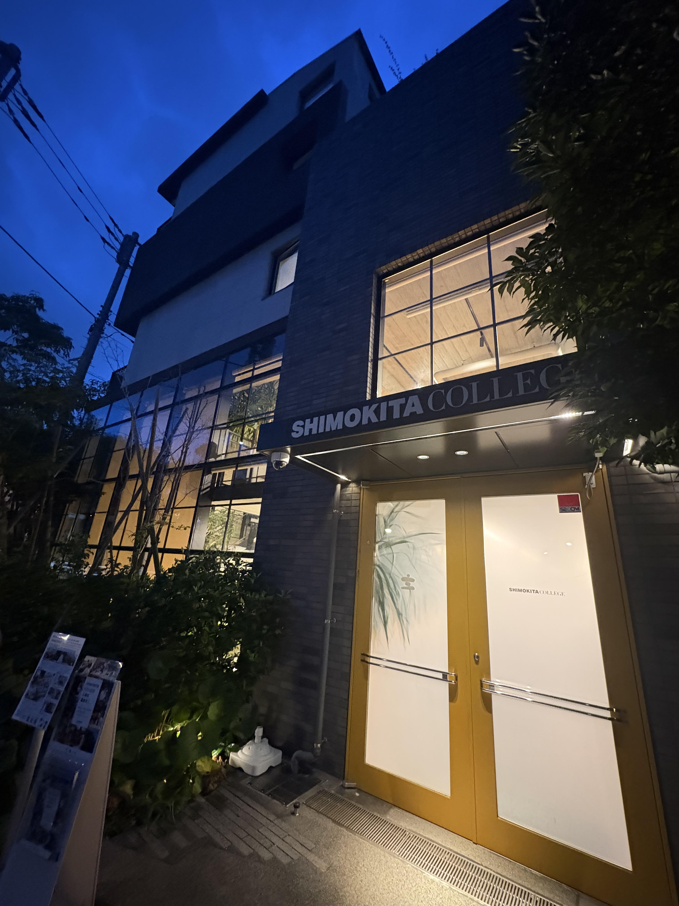

7月28日（月）、下北沢にある下北カレッジで開催された「題名のない座談会」に、創設者の西山がゲストとして登壇しました。
今回のテーマは、「教育と営業に共通する、人を動かす本質。」
教育と営業は一見まったく異なる仕事に見えますが、どちらも「人の可能性を信じ、その人が自ら一歩踏み出せるように関わる仕事」です。教育現場や営業現場、そして「あんたがおらな」での実践を通して感じてきた、人との向き合い方や信頼関係の築き方について、参加者の皆さんと対話形式でお話しました。